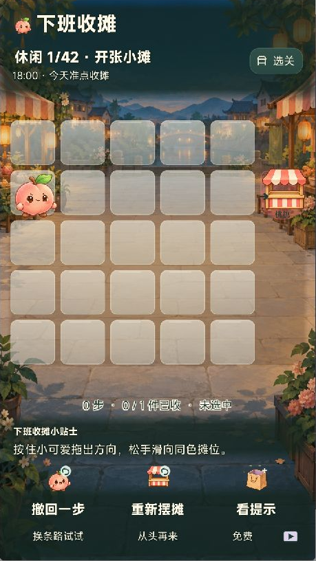
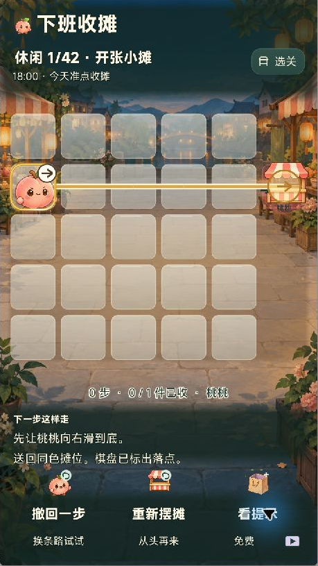

让移动顺序成为解题核心
同一条道路会因伙伴所在位置而改变。通过角色互相阻挡，把简单方向操作转化为先后顺序与空间位置的推理，适合短时间体验后逐步深入。
TAPTAP MAKER / 个人 AI 游戏实践
在暖灯夜市里安排伙伴的移动顺序，让桃桃、抹茶和团团滑回同色摊位。用同伴作挡板，逐步加入传送、推车与节拍门，把一滑到底变成路线推理。
GAMEPLAY / 核心体验
选中伙伴并拖向一个方向，角色会一直滑到被挡住的位置。每位伙伴既是需要送回摊位的对象，也能成为其他伙伴的临时挡板。玩家需要结合目标位置与机关，决定先移动谁、在哪里停下，再让所有伙伴归摊。当前开发版包含 42 个休闲关卡和 28 个限时挑战。
IN-GAME CAPTURES / 游戏画面
以下是萤灯夜市本地开发版的原生运行截图，移除窗口标题栏，保留完整游戏区域。


DESIGN / 规则与取舍
同一条道路会因伙伴所在位置而改变。通过角色互相阻挡，把简单方向操作转化为先后顺序与空间位置的推理，适合短时间体验后逐步深入。
单行格约束方向，纸袋负责传送，推车改变阻挡，压力按钮控制门，节拍门需要等待，步数预算约束操作。关卡用组合逐步引入变化，而不是只扩大棋盘。
休闲模式强调尝试与撤销；限时挑战在确认开局后才计时，撤销、提示和等待各有时间成本。窗口失焦会暂停，兼顾碎片时间与挑战节奏。
免费提示从玩家当前状态指出下一步，配合方向和落点预览降低理解成本。新版将免费提示与可选视频路线分开，避免不同操作共享模糊热区。
MY PRACTICE / 项目推进
围绕滑动规则组织机关、关卡与难度递进，通过 AI 协作实现和检查关卡解法。根据反馈持续调整拖动预览、提示反馈、选关定位和竖屏操作区；视觉从旧版 Unity 原型更新为 Maker 项目的萤灯夜市，统筹角色表情、透明棋盘与图标按钮的呈现。
当前本地为 70 关萤灯夜市版，截图采于 2026 年 10 月 15 日。该轮美术与提示改动尚未发布；TapTap 公开页仍介绍 50 关。此处用新版项目替换作品集原来的 10 关 Unity 原型介绍。
TAPTAP / 游戏入口
TapTap 页面提供公开介绍与平台支持的试玩入口。平台当前可玩的内容以该页面为准，本页同时记录开发中的后续迭代。